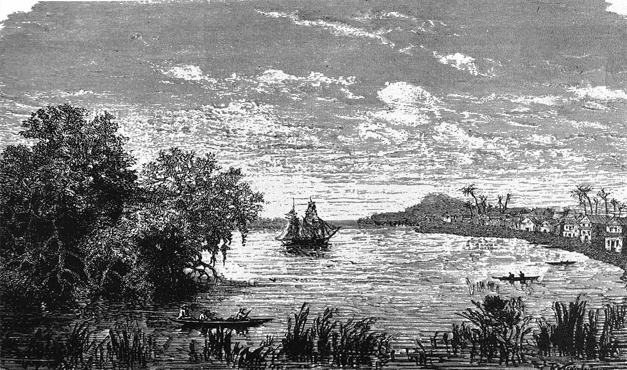

Aspectos Generales
Aspectos generales que evolucionan con el tiempo
Buenaventura ha debido afrontar asaltos, abandonos, traslados e incendios. Su historia está constituida por contradicciones: pobreza y riqueza; comercio y contrabando; aislamiento y conexión.
Buenaventura se consolidó en las últimas décadas del siglo XX como el principal puerto de Colombia. A partir de entonces, allí arriban mercancías provenientes de todos los lugares del mundo y se exportan productos que llegan desde el interior del país. Desde su establecimiento en la primera mitad del siglo XVI, Buenaventura ha debido afrontar asaltos, abandonos, traslados e incendios. Su historia está constituida por contradicciones: pobreza y riqueza; comercio y contrabando; aislamiento y conexión. Todo esto se mezcla en una ciudad que tiene una posición geográfica estratégica que le permitiría convertirse en la capital del Pacífico colombiano.
La historia de Buenaventura no inicia con la llegada de los primeros europeos a su litoral, en el siglo XVI. En realidad, se remonta por lo menos al 3.000 a. de C., cuando grupos de cazadores y recolectores recorrieron la estrecha franja de llanuras y colinas que los geógrafos denominan tierras bajas del Pacífico. Es posible que esas primeras sociedades provinieran del istmo de Panamá y se dedicaran a la recolección de frutos, la caza y la pesca. En cuanto a su número, este variaba según la cantidad de recursos disponibles. Hacia el año 1.000 a. de C., estos grupos pasaron a conformar cacicazgos.
(Puerto y bahía de Buenaventura Eduardo Acevedo Latorre)
La Isla de Cascajal, de tres kilómetros de longitud muestra una superficie irregular con depresiones en las dos extremidades y coronada por un altozano en el centro que hoy se denomina " La loma".